정보처리기사(구) (2009-08-30 기출문제)
1과목: 데이터 베이스
1. 분산 데이터베이스에 대한 설명으로 옳지 않은 것은?
- 분산 데이터베이스 관리시스템의 목적은 사용자들이 데이터가 어느 지역 데이터베이스에 위치하고 있는지를 알 수 있도록 하는 것이다.
- 분산 데이터베이스 관리시스템의 형태로는 동질 분산데이터베이스 관리시스템과 이질 분산 데이터베이스관리시스템으로 구분할 수 있다.
- 분산 데이터베이스에서의 수평역할은 전역 테이블을 구성하는 튜플들을 부분집합으로 분할하는 방법을 한다.
- 분산 데이터베이스는 데이터의 처리나 이용이 많은 지역에 데이터베이스를 위치시킴으로써 데이터의 처리가 가능한 해당 지역에서 해결될 수 있도록 하는 데이터베이스 시스템이다.
(정답률: 68%)

2. 3 단계 스키마 중 다음 설명에 해당하는 것은?
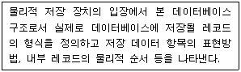
- Internal schema
- Conceptual schema
- External schema
- Tree schema
(정답률: 76%)
3. SQL에서 DELETE 명령에 대한 설명으로 옳지 않은 것은?
- 테이블의 행을 삭제할 때 사용한다.
- WHERE 조건절이 없는 DELETE명령을 수행하면 DROP TABLE 명령을 수행했을 때와 같은 효과를 얻을 수 있다.
- SQL을 사용 용도에 따라 분류할 경우 DML에 해당한다.
- 기본 사용 형식은 “DELETE FROM 테이블 [WHERE 조건];”이다.
(정답률: 72%)
4. 데이터베이스의 특성으로 옳지 않은 것은?
- 데이터베이스는 계속적으로 변화된다.
- 데이터베이스의 데이터는 그 주소나 위치에 의해 참조된다.
- 데이터베이스는 실시간으로 접근한다.
- 데이터베이스는 동시 공용이다.
(정답률: 77%)
5. 트랜잭션의 특성으로 가장 적합한 것은?
- Atomicity, Durability, Consistency, Isolation
- Transparency, Consistency, Isolation, Reliability
- Reliability, Atomicity, Security, Consistency
- Consistency, Atomicity, Isolation, Reliability
(정답률: 74%)
6. 다음과 같이 오름차순 정렬되었을 경우 사용된 정렬 기법은 무엇인가?
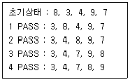
- bubble sort
- selection sort
- quick sort
- shell sort
(정답률: 74%)
7. 로킹(locking) 단위에 대한 설명으로 옳지 않은 것은?
- 로킹의 대상이 되는 객체의 크기를 의미한다.
- 로킹의 단위가 커지면 병행성 수준이 낮아진다.
- 로킹의 단위가 작아지면 로킹 오버헤드가 감소한다.
- 데이터베이스도 로킹의 단위가 될 수 있다.
(정답률: 73%)
8. 다음 영문의 괄호 안 내용으로 공통 적용될 수 있는 것은?
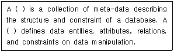
- Domain
- Schema
- Cardinality
- Degree
(정답률: 76%)
9. 릴레이션의 특징으로 옳은 내용 모두를 나열한 것은?
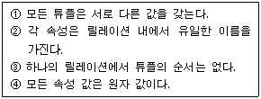
- ①, ③
- ①, ③, ④
- ②, ③, ④
- ①, ②, ③, ④
(정답률: 75%)
10. SQL에서 VIEW를 삭제할 때 사용하는 명령은?
- ERASE
- KILL
- DROP
- DELETE
(정답률: 74%)
11. This search examines each element in turn to see if it is the one sought, continuing until either the element is found or all the elements in the list have examined. What is this search?
- Binary search
- Linear search
- Block search
- Interpolation search
(정답률: 44%)
12. 다음 트리의 터미널 노드 수는?
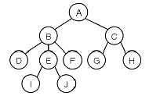
- 2
- 4
- 6
- 10
(정답률: 64%)
13. 관계대수에 대한 설명으로 옳지 않은 것은?
- 원하는 릴레이션을 정의하는 방법을 제공하며 비절차적 언어이다.
- 릴레이션 조작을 위한 연산의 집합으로 피연산자와 결과가 모두 릴레이션이다.
- 일반 집합 연산과 순수 관계 연산으로 구분된다.
- 질의에 대한 해를 구하기 위해 수행해야 할 연산의 순서를 명시한다.
(정답률: 70%)
14. 개체-관계 모델 ( E-R Model )에 대한 설명으로 옳지 않은 것은?
- 특정 DBMS를 고려한 것은 아니다.
- E-R 다이어그램에서 개체 타입은 사각형, 관계 타입은 타원, 속성은 다이아몬드를 나타낸다.
- 개체 타입과 관계타입을 기본 개념으로 현실 세계를 개념적으로 표현하는 방법이다.
- 1976년 Peter Chen이 제안하였다.
(정답률: 74%)
15. 스택의 자료 삭제 알고리즘이다. ( ) 안 내용으로 가장 적합한 것은? (단, Top : 스택포인터 , S : 스택의 이름)
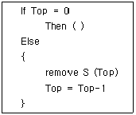
- Overflow
- Top = Top+1
- Underflow
- Top = Top-2
(정답률: 61%)
16. 데이터 모델의 구성 요소가 아닌 것은?
- 추상적인 개념으로 조직된 구조
- 구성 요소의 연산
- 구성 요소의 제약 조건
- 구성 요소들의 저장 인터페이스
(정답률: 50%)
17. 정규화에 관한 설명으로 옳지 않은 것은?
- 릴레이션 R의 도메인들의 값이 원자 값만을 가지면 릴레이션 R은 제1정규형에 해당된다.
- 릴레이션 R이 제1정규형을 만족하면서, 키가 아닌 모든 속성이 기본 키에 완전 함수 종속이면 릴레이션 R은 제 2정규형에 해당된다.
- 정규형들은 차수가 높아질수록 (제1정규형→제5정규형) 만족시켜야 할 제약조건이 감소된다.
- 릴레이션 R이 제2정규형을 만족하면서, 키가 아닌 모든 속성들이 기본 키에 이행적으로 함수 종속되지 않으면 릴레이션 R은 제3정규형에 해당된다.
(정답률: 72%)
18. 다음 트리를 전위 순회 (preorder traversal )한 결과는?
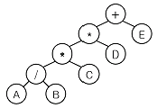
- + * A B / * C D E
- A B / C * D * E +
- A / B * C * D + E
- + * * / A B C D E
(정답률: 71%)
19. 어떤 릴레이션 R에서 X와 Y를 각각 R의 애트리뷰트 집합의 부분 집합이라고 할 경우 애트리뷰트 X의 값 각각에 대해 시간에 관계없이 항상 애트리뷰트 Y의 값이 오직 하나만 연관되어 있을 때 Y는 X에 함수 종속이라고 한다. 이 함수 종속의 표기로 옳은 것은?
- Y → X
- Y ⊂ X
- X → Y
- X ⊂ Y
(정답률: 69%)
20. 데이터베이스 설계 단계 중 물리적 설계의 옵션선택 시 고려 사항으로 거리가 먼 것은?
- 스키마의 평가 및 정제
- 응답 시간
- 저장 공간의 효율화
- 트랜잭션 처리도
(정답률: 72%)
2과목: 전자 계산기 구조
21. 다음 소자 중에서 ROM과 유사한 성격을 가지며, AND array와 OR array로 구성된 것은?
- PLA
- shift register
- RAM
- LSI
(정답률: 55%)
22. 다음 중 누산기에 대한 설명으로 옳은 것은?
- 연산장치에 있는 레지스터의 하나로서 연산 결과를 기억하는 장치이다.
- 기억장치 주변에 있는 회로인데 가가승제 계산 및 논리연산을 행하는 장치이다.
- 일정한 입력 숫자들을 더하여 그 누계를 항상 보관하는 장치이다.
- 정밀 계산을 위해 특별히 만들어 두어 유효 숫자의 개수를 늘리기 위한 것이다.
(정답률: 60%)
23. 1MByte의 기억장소를 가진 어떤 컴퓨터의 명령어 구성이 다음과 같을 때 이 명령어가 가질 수 있는 최대 Operation수는?
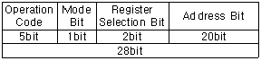
- 32개
- 64개
- 128개
- 256개
(정답률: 59%)
24. 컴퓨터가 인터럽트 루틴을 수행한 후에 처리하는 것은?
- 전원을 다시 동작시킨다.
- 모니터 화면에 인터럽트 종류를 디스플레이 한다.
- 메모리의 내용을 지워서 다른 프로그램이 적재될 수 있도록 한다.
- 인터럽트 처리 시 보존시켰던 PC 및 제어상태 데이터 PC와 제어상태 레지스터에 복구한다.
(정답률: 76%)
25. 8bit 로 된 register가 있다. 첫째 bit는 부호 bit 로서 0,1 일 때 각각 양(+), 음(-)을 나타낸다고 할 때 2의 보수로 숫자를 표시한다면 이 register 로 표시할 수 있는 10진수의 범위는?
- -256 ~ +256
- -128 ~ +127
- -128 ~ +128
- -256 ~ +127
(정답률: 65%)
26. 실행 사이클에서 다음 마이크로 연산이 나타내는 동작은?
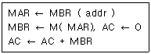
- ADD to AC
- OR to AC
- STORE to AC
- LOAD to AC
(정답률: 47%)
27. 다음 중 랜덤 (random) 처리가 되지 않는 기억장치는?
- 자기 드럼
- 자기 디스크
- 자기 테이프
- 자기 코어
(정답률: 64%)
28. 입·출력이 실제로 일어나고 있을 때는 채널 제어기가 임의의 시점에서 볼 때 마치 어느 한 입·출력 장치의 전용인 것처럼 운용되는 채널은?
- Interlock channel
- Crossbar channel
- Selector channel
- I/O channel
(정답률: 50%)
29. 캐시 메모리에서 miss가 발생한 경우 블록을 교환하는 교환 알고리즘 가운데 가장 효율적인 방법은?
- LRU(Least Recently Used)
- LFU(Least Frequently Used)
- FIFO(First In First Out)
- LIFO(Last In First Out)
(정답률: 53%)
30. 다음과 같은 마이크로 오퍼레이션과 관련 있는 사이클은?
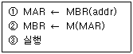
- FETCH CYCLE
- EXECUTE CYCLE
- INDIRECT CYCLE
- INTERRUPT CYCLE
(정답률: 39%)
31. 마이크로프로그램 제어기가 다음에 수행할 마이크로 인스트럭션의 주소를 결정하는데 사용하는 정보가 아닌 것은?
- 인스트럭션 레지스터 (IR)
- 타이밍 신호
- CPU의 상태 레지스터
- 마이크로 인스트럭션에 나타난 주소
(정답률: 53%)
32. 다음 중 Unicode와 ASCII 코드와의 관계를 가장 잘 설명한 것은?
- Unicode는 ASCII를 인식할 수 있지만 ASCII에서는Unicode의 특수문자를 인식할 수 없다.
- Unicode는 ASCII를 인식할 수 없고 ASCII에서도Unicode의 문자를 인식할 수 없다.
- Uniccode는 ASCII를 인식하고 ASCII에서도 Unicode의 특수문자를 인식할 수 있다.
- Unicode 는 ASCII를 인식할 수 없지만 ASCII에서는Unicode의 특수문자를 인식할 수 있다.
(정답률: 64%)
33. 스택 컴퓨터의 특성에 대한 설명으로 옳지 않은 것은?
- 피연산자를 나타내지 않기 때문에 인스트럭션의 길이가 짧아서 기억공간의 이용이 효율적이다.
- 스택에 기억된 데이터만을 이용하여 연산하므로 인스트럭션수행 시간이 짧다.
- 함수연산에 필요한 데이터를 미리 처리되는 순서대로 기억시켜 놓아 편리하다.
- 스택에 레지스터의 수가 적을 때에는 전달기능의 인스트럭션인 PUSH와 POP를 사용해야 되는 비효율성이 있다.
(정답률: 38%)
34. 다음은 입출력 포트 중 고립형 I/O ( Isolated I/O )에 대한 설명이다. 옳지 않은 것은?
- 고립형 I/O 는 I/O Mapped I/O 라고도 불리 운다.
- 고립형 I/O 는 기억장치의 주소 공간과 전혀 다른 입출력 포트를 갖는 형태이다.
- 하나의 읽기/쓰기 신호만 필요하다.
- 각 명령은 인터페이스 레지스터의 주소를 가지고 있으며 뚜렷한 입출력 명령을 가지고 있다.
(정답률: 43%)
35. 부호화된 2의 보수로 표현된 데이터를 연산할 때 overflow에 대해서 잘못 설명한 것은? (단, 가장 왼쪽 비트는 부호 비트이고, 그 다음 비트는 MSB라 한다.)
- 양수끼리 더할 때 MSB에서 자리올림이 발생하지 않으면 overflow가 일어난다.
- 음수끼리 더할 때 MSB에서 자리올림이 발생하지 않으면 overflow가 일어난다.
- 부호 bit로 들어온 자리올림이 carry bit로 나가지 못하면 overflow가 일어난다.
- 부호 bit로 들어온 자리올림이 없는데 carry가 발생하면 overflow가 일어난다.
(정답률: 35%)
36. 컴퓨터의 주기억장치 용량이 8192비트이고, 워드 길이가 16비트일 때 PC(program counter),AR(address register)와 DR (data register )의 크기는?
- PC=8, AR=9, DR=16
- PC=9, AR=9, DR=16
- PC=16, AR=16, DR=16
- PC=8, AR=16, DR=16
(정답률: 50%)
37. 다음 메이저 상태 (Major State)에 대한 설명으로 틀린 것은?
- fetch 상태는 명령을 메모리로부터 읽어 이를 해독하는 상태이다.
- fetch 상태의 다음 상태는 반드시 indirect 상태가 되어야 한다.
- execute 상태는 처리하기 위한 실제 데이터를 읽어decode된 연산을 수행하는 상태이다.
- Interrupt 상태가 종료되면 fetch 상태로 분기한다.
(정답률: 57%)
38. 소프트웨어에 의한 우선순위 체제의 특성을 설명한 것으로 틀린 것은?
- 경제적이다.
- 융통성이 있다.
- 반응속도가 느리다.
- 우선순위를 변경하기 어렵다.
(정답률: 53%)
39. DMA (Direct Memory Access) 과정에서 인터럽트가 발생하는 시점은?
- DMA가 메모리 참조를 시작할 때
- DMA 제어기가 자료 전송을 종료했을 때
- 중앙처리장치가 DMA 제어기를 초기화 했을 때
- 사이클 훔침 (cycle stealing )이 발생하는 순간
(정답률: 41%)
40. 버스 클록 (bus clock)이 2.5GHz이고, 데이터 버스의 폭이 8비트인 버스의 대역폭에 가장 근접한 것은?
- 25 [Gbytes/sec]
- 16 [Gbytes/sec]
- 2 [Gbytes/sec]
- 1 [Gbytes/sec]
(정답률: 41%)
3과목: 운영체제
41. UNIX에서 사용자에 대한 파일의 접근을 제한하는데 사용되는 명령은?
- chmod
- Is
- fork
- cat
(정답률: 69%)
42. UNIX의 쉘 (Shell)에 관한 설명으로 옳지 않은 것은?
- 명령어 해석기이다.
- 시스템과 사용자 간의 인터페이스를 담당한다.
- 여러 종류의 쉘이 있다.
- 프로세스, 기억장치, 입/출력 관리를 수행한다.
(정답률: 65%)
43. 분산운영체제의 개념 중 강결합 (TIGHTLY-COUPLED) 시스템의 설명으로 옳지 않은 것은?
- 프로세스간의 통신은 공유메모리를 이용한다.
- 여러 처리기들 간에 하나의 저장장치를 공유한다.
- 메모리에 대한 프로세스 간의 경쟁 최소화가 고려되어야 한다.
- 각 사이트는 자신만의 독립된 운영체제와 주기억장치를 갖는다.
(정답률: 65%)
44. 4개의 페이지를 수용할 수 있는 주기억장치가 있으며, 초기에는 모두 비어 있다고 가정한다. 다음의 순서로 페이지 참조가 발생할 때, FIFO 페이지 교체 알고리즘을 사용할 경우 페이지 결함의 발생 횟수는?
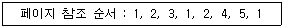
- 6회
- 7회
- 8회
- 9회
(정답률: 65%)
45. 가상기억장치 구현에서 세그먼테이션(Segmentation) 기법의 설명으로 옳지 않은 것은?
- 주소 변환을 위해서 페이지 맵 테이블(Page Map Table)이 필요하다.
- 세그먼테이션은 프로그램을 여러 개의 블록으로 나누어 수행한다.
- 각 세그먼트는 고유한 이름과 크기를 갖는다.
- 기억장치 보호키가 필요하다.
(정답률: 54%)
46. 파일 구조 중 순차 편성에 대한 설명으로 옳지 않은 것은?
- 특정 레코드를 검색할 때, 순차적으로 검색을 하므로 검색 효율이 높다.
- 어떠한 기억 매체에서도 실현 가능하다.
- 주기적으로 처리하는 경우에 시간적으로 속도가 빠르며, 처리비용이 절감된다.
- 순차적으로 실제 데이터만 저장되므로 기억 공간의 활용률이 높다.
(정답률: 58%)
47. 운영체제의 운영 기법 중 동시에 프로그램을 수행할 수 있는 CPU를 두 개 이상 두고 각각 그 업무를 분담하여 처리할 수 있는 방식을 의미하는 것은?
- 시분할 처리 시스템(Time-Sharing System)
- 실시간 처리 시스템(Real-Time System)
- 다중 처리 시스템 (Multi-Processing System)
- 다중 프로그래밍 시스템(Multi-Programming System)
(정답률: 73%)
48. 그림과 같은 메모리 구성에서 15M 크기의 블록을 메모리에 할당하고자 한다. ⓒ 영역에 할당시킬 경우 사용된 정책은 무엇인가?
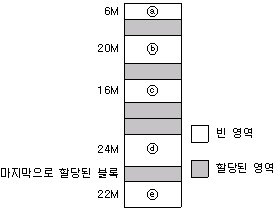
- Best-Fit
- First-Fit
- Next- Fit
- Worst- Fit
(정답률: 75%)
49. 보안 메커니즘 중 합법적인 사용자에게 유형 혹은 무형의 자원을 사용하도록 허용할 것인지를 확인하는 제반행위로서, 대표적 방법으로는 패스워드, 인증용 카드, 지문 검사 등을 사용하는 것은?
- Cryptography
- Authentication
- Digital Signature
- Threat Monitoring
(정답률: 59%)
50. 프로세서의 상호 연결 구조 중 하이퍼 큐브 구조에서 각CPU가 16개의 연결점을 가질 경우 CPU의 총 개수는?
- 4
- 16
- 32
- 65536
(정답률: 46%)
51. 절대(Absolute) 로더의 경우 기억장소 할당 및 연결 작업의 주체는 ?
- 에디터
- 로더
- 언어번역프로그램
- 프로그래머
(정답률: 48%)
52. 교착상태 (Deadlock)의 해결 방법 중 회피 (Avoidance) 기법에 관한 옳은 내용 모두를 나열한 것은?
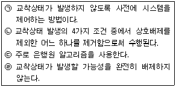
- (ㄱ), (ㄷ)
- (ㄴ), (ㄷ)
- (ㄱ), (ㄴ), (ㄷ)
- (ㄷ), (ㄹ)
(정답률: 40%)
53. 다음은 세마포어와 관련된 두 연산 P(S)와 V(S)이다. ①, ②의 내용으로 옳게 짝지어진 것은?
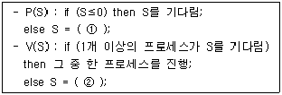
- ① S-1 ② S-1
- ① S+1 ② S-1
- ① S-1 ② S+1
- ① S+1 ② S+1
(정답률: 47%)
54. 3개의 페이지 프레임을 갖는 시스템에서 페이지 참조순서가 1, 2, 1, 0, 4, 1, 3 일 경우 LRU(Least Recently Used) 알고리즘에 의한 페이지 대치의 최종 결과는?
- 1, 4, 3
- 1, 2, 0
- 2, 4, 3
- 0, 1, 3
(정답률: 66%)
55. 디렉토리 구조 중 MFD와 UFD로 구성되며, MFD는 각 사용자의 이름이나 계정 번호 및 UFD를 가리키는 포인터를 갖고 있으며 UFD는 오직 한 사용자가 갖고 있는 파일들에 대한 파일 정보만 갖고 있는 것은?
- 1단계 디렉토리
- 2단계 디렉토리
- 트리구조 디렉토리
- 비순환 그래프 디렉토리
(정답률: 58%)
56. 회전지연시간을 최적화하기 위한 스케줄링 기법은 탐구시간을 필요로 하지 않는 고정헤드디스크 시스템이나, 각 트랙마다 헤드를 갖는 드럼 등의 보조기억장치에서 사용된다. 회전시간의 최적화를 위해 구현된 디스크 스케줄링 기법은?
- C-SCAN
- Sector Queuing
- SSTF
- FCFS
(정답률: 35%)
57. 다음과 같은 작업들이 차례로 준비상태 큐에 들어왔다고 가정할 경우, SJF 기법으로 스케줄링 한다면 작업번호 2의 대기시간은?
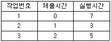
- 6
- 7
- 10
- 15
(정답률: 45%)
58. 운영체제에 대한 설명으로 옳지 않은 것은?
- 여러 사용자들 사이에서 자원의 공유를 가능하게 한다.
- 운영체제의 종류에는 UNIX, LINUX, JAVA 등이 있다.
- 사용자와 시스템 간의 편리한 인터페이스를 제공한다.
- 자원의 효과적인 경영을 위해 스케줄링 기능을 제공한다.
(정답률: 75%)
59. 스레드 (Thread)에 대한 설명으로 거리가 먼 것은?
- 하나의 스레드는 상태를 줄인 경량 프로세스라고도 한다.
- 프로세스 내부에 포함되는 스레드는 공통적으로 접근 가능한 기억장치를 통해 효율적으로 통신한다.
- 스레드를 사용하면 하드웨어, 운영체제의 성능과 응용프로그램의 처리율을 향상시킬 수 있다.
- 하나의 프로세스에 여러 개의 스레드가 존재할 수 없다.
(정답률: 75%)
60. 분산운영체제의 특징 중 다음 설명과 관계되는 것은?
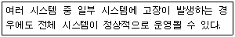
- Availability
- Expandability
- Resource Sharing
- Reliability
(정답률: 39%)
4과목: 소프트웨어 공학
61. 정형 기술 검토 (FTR)의 지침 사항으로 옳지 않은 것은?
- 의제를 제한한다.
- 논쟁과 반박을 제한한다.
- 문제 영역을 명확히 표현한다.
- 참가자의 수를 제한하지 않는다.
(정답률: 69%)
62. 소프트웨어 프로젝트 관리를 효과적으로 수행하는데 필요한 3P와 거리가 먼 것은?
- People
- Power
- Problem
- Process
(정답률: 78%)
63. 소프트웨어 재공학의 필요성이 대두된 가장 주된 이유는?
- 요구사항분석의 문제
- 설계의 문제
- 구현의 문제
- 유지보수의 문제
(정답률: 68%)
64. 사용자 인터페이스 설계시 오류 메시지나 경고에 관한 지침으로 옳지 않은 것은?
- 메시지는 이해하기 쉬워야 한다.
- 오류로부터 회복을 위한 구체적인 설명이 제공되어야 한다.
- 오류로 인해 발생될 수 있는 부정적인 내용은 가급적 피한다.
- 소리나 색 등을 이용하여 듣거나 보기 쉽게 의미 전달을 하도록 한다.
(정답률: 74%)
65. 나선형 (Spiral) 모형에 대한 설명으로 옳지 않은 것은?
- 위험성 평가에 크게 의존하기 때문에 이를 발견하지 않으면 문제가 발생 할 수 있다.
- 대규모 시스템의 소프트웨어 개발에 적합하다.
- 여러 번의 개발 과정을 거쳐 점진적으로 완벽한 소프트웨어를 개발한다.
- 작업 순서는 타당성 검토, 계획, 요구분석, 설계, 구현, 시험, 유지보수의 단계로 이루어진다.
(정답률: 48%)
66. 소프트웨어의 특성이 아닌 것은?
- 물리적인 마모에 의해서 사용할 수 없게 된다.
- 유형의 매체에 저장되지만 개념적이고 무형적이다.
- 수학이나 물리학에서 볼 수 있는 규칙적이고 정형적인 구조가 없다.
- 요구나 환경의 변화에 따라 적절히 변형시킬 수 있다.
(정답률: 74%)
67. 소프트웨어 재사용의 이점으로 볼 수 없는 것은?
- 개발 비용을 감소시킨다.
- 프로그램 언어가 종속적이다.
- 소프트웨어 품질을 향상시킨다.
- 프로그램 생성 지식을 공유하게 된다.
(정답률: 67%)
68. 소프트웨어 품질 목표 중 소프트웨어를 다른 환경으로 이식할 경우에도 운용 가능하도록 쉽게 수정될 수 있는 시스템 능력을 의미하는 것은?
- Portability
- Functionality
- Usability
- Efficiency
(정답률: 59%)
69. 다음 중 검증시험(Validation Test)과 거리가 먼 것은?
- 알파(Alpha) 테스트
- 베타(Beta) 테스트
- 블랙박스 (Black-Box) 테스트
- 화이트박스 (White-Box) 테스트
(정답률: 52%)
70. UML에 대한 설명으로 옳지 않은 것은?
- OMG에서 만든 통합 모델링 언어로서 객체 지향적 분석, 설계 방법론의 표준 지정을 목표로 한다.
- 어플리케이션을 개발할 때 쉽게 이해할 수 있도록 도와주는 여러 가지 유형의 다이어그램을 제공한다.
- 실시간 시스템 및 분산시스템과 같은 시스템의 분석과 설계에는 사용될 수 없다.
- 개발자와 고객 또는 개발자 상호간의 의사소통을 원활 하게 할 수 있다.
(정답률: 66%)
71. 럼바우 분석 기법에서 자료 흐름도를 사용하여 프로세스들의 처리 과정을 기술하는 것과 관계되는 것은?
- 객체 모델링
- 기능 모델링
- 동적 모델링
- 정적 모델링
(정답률: 52%)
72. 자료 사전에서 자료의 연결을 나타내는 기호는 ?
- =
- ( )
- +
- { }
(정답률: 65%)
73. 프로젝트에 내재된 위험 요소를 인식하고 그 영향을 분석하여 이를 관리하는 활동으로서, 프로젝트를 성공시키기 위하여 위험 요소를 사전에 예측하여 대비하는 모든 기술과 활동을 포함하는 것은?
- Critical Path Method
- Risk Analysis
- Work Breakdown Structure
- Waterfall Model
(정답률: 70%)
74. 유지보수의 종류 중 다음 설명에 해당하는 것은?
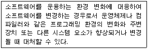
- Perfective maintenance
- Corrective maintenance
- Preventive maintenance
- Adaptive maintenance
(정답률: 62%)
75. 공학적으로 잘 작성된 소프트웨어의 특성이 아닌 것은?
- 소프트웨어는 신뢰성이 높아야 하며 효율적이어야 한다.
- 소프트웨어는 사용자가 원하는 대로 동작해야 한다.
- 소프트웨어는 편리성이나 유지보수성에 점차 비중을 적게 두는 경향이 있다.
- 소프트웨어는 잠재적인 오류가 가능한 적어야 하며 유지보수가 용이해야 한다.
(정답률: 76%)
76. 바람직한 소프트웨어 설계 지침이 아닌 것은?
- 적당한 모듈의 크기를 유지한다.
- 모듈 간의 접속 관계를 분석하여 복잡도와 중복을 줄인다.
- 모듈 간의 결합도는 강할수록 바람직하다.
- 모듈 간의 효과적인 제어를 위해 설계에서 계층적 자료 조직이 제시되어야 한다.
(정답률: 74%)
77. 소프트웨어 형상관리의 대상으로 거리가 먼 것은?
- 소스 레벨과 수행 형태인 컴퓨터 프로그램
- 숙련자와 사용자를 목표로한 컴퓨터프로그램을 서술하는 문서
- 프로그램 내에 포함된 자료구조
- 시스템 개발 비용
(정답률: 65%)
78. 소프트웨어 역공학(Software reverse engineering)에 대한 설명으로 옳지 않은 것은?
- 역공학의 가장 간단하고 오래된 형태는 재문서화라고 할 수 있다.
- 기존 소프트웨어의 구성 요소와 그 관계를 파악하여 설계도를 추출한다.
- 원시 코드를 분석하여 소프트웨어의 관계를 파악한다.
- 대상 시스템이 없이 새로운 시스템으로 개선하는 변경 작업이다.
(정답률: 71%)
79. 객체지향설계에 있어서 정보은폐(information hiding)의 가장 근본적인 목적은?
- 코드를 개선하기 위하여
- 프로그램의 길이를 짧게 하기 위하여
- 고려되지 않은 영향 (side effect)들을 최소화하기 위하여
- 인터페이스를 최소화하기 위하여
(정답률: 71%)
80. 블랙박스 검사에 대한 설명으로 옳지 않은 것은?
- 각 기능이 완전히 작동되는 것을 입증하는 검사이다.
- 인터페이스 결함, 성능결함, 초기화와 종료 이상 결함, 등을 찾아낸다.
- 동치분할검사는 논리적인 조건과 대응하는 행동을 간략히 표현할 수 있도록 하는 검사 사례 설계 기법이다.
- 경계값 분석은 입력의 경계값에서 발생하는 오류를 제거하기 위한 검사 기법이다.
(정답률: 48%)
5과목: 데이터 통신
81. 문자의 시작과 끝에 각각 START 비트와 STOP 비트가 부가되어 전송의 시작과 끝을 알려 전송하는 방식은?
- 비동기식 전송
- 동기식 전송
- 전송 동기
- PCM 전송
(정답률: 58%)
82. TCP/IP 모델 중 응용계층 프로토콜에 해당하지 않은 것은?
- TELNET
- SMTP
- ROS
- FTP
(정답률: 59%)
83. OSI 참조 모델 중 각 계층의 기능 설명이 옳지 않은 것은?
- 물리 계층 : 전기적, 기능적, 절차적 규격에 대해 규정
- 데이터 링크 계층 : 흐름 제어와 에러 복구
- 네트워크 계층 : 경로 설정 및 폭주 제어
- 전송 계층 : 코드 변환, 구문 검색
(정답률: 55%)
84. 위상을 이용한 디지털 변조 방식으로 옳은 것은?
- ASK
- FSK
- PSK
- PCM
(정답률: 49%)
85. 다음 그림과 같은 전송 방식으로 옳은 것은?
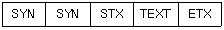
- 문자위주 동기방식
- 비트지향형 동기방식
- 조보식 동기방식
- 프레임 기동방식
(정답률: 64%)
86. 블루투스(Bluetooth) 프로토콜 구조 중 오류제어, 인증(Authentication), 암호화를 정의하는 것은?
- Application Layer
- L2CAP Layer
- RF Layer
- Tunnel Layer
(정답률: 43%)
87. 점대점 링크를 통하여 인터넷 접속에 사용되는 프로토콜인 PPP (Point to Point Protocol)에 대한 설명으로 옳지 않은 것은?
- 재전송을 통한 오류 복구와 흐름제어 기능을 제공한다.
- LCP와 NCP를 통하여 유용한 기능을 제공한다.
- IP 패킷의 캡슐화를 제공한다.
- 동기식과 비동기식 회선 모두를 지원한다.
(정답률: 38%)
88. HDLC(High-level Data Link Control)의 세 가지 동작 모드 중 다음 설명에 해당하는 것은?
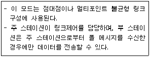
- NRM
- ARM
- ABM
- NBM
(정답률: 41%)
89. 다음 중 DTE에서 출력되는 디지털 신호를 디지털 회선망에 적합한 신호형식으로 변환하는 장치로 옳은 것은?
- MODEM
- CCU
- DCS
- DSU
(정답률: 50%)
90. 아날로그-디지털 부호화 방식인 송신측 PCM(Pulse Code Modulation) 과정을 순서대로 바르게 나타낸 것은?
- 표본화(Sampling)→양자화(Quantization)→부호화(Encoding)
- 양자화(Quantization)→부호화(Encoding)→표본화(Sampling)
- 부호화(Encoding)→양자화(Quantization)→표본화(Sampling)
- 표본화(Sampling)→부호화(Encoding)→양자화(Quantization)
(정답률: 70%)
91. HDLC 프레임 구성에서 프레임 검사 시퀀스(FCS) 영역의 기능으로 옳은 것은?
- 전송 오류 검출
- 데이터 처리
- 주소 인식
- 정보 저장
(정답률: 65%)
92. TCP/IP 관련 프로토콜 중 IP 프로토콜을 보완하기 위한 인터넷 계층 프로토콜로 옳지 않은 것은?
- ICMP
- ARP
- RARP
- SNMP
(정답률: 54%)
93. 다음 중 X.25 프로토콜 중 IP 프로토콜의 계층 구조에 포함 되지 않는 것은?
- 패킷 계층
- 링크계층
- 물리 계층
- 네트워크 계층
(정답률: 44%)
94. 보오(baud) 속도가 1400이고, 한 번에 3개의 비트를 전송할 때 데이터 신호속도(bps)는 얼마인가 ?
- 1200
- 2800
- 4200
- 5600
(정답률: 71%)
95. 매체 접근 제어 기법 중 CSMA/CD 방식에 대한 설명으로 옳지 않은 것은?
- 각 호스트들이 전송매체에 경쟁적으로 데이터를 전송하는 방식이다.
- 전송된 데이터는 전송되는 동안에 다른 호스트의 데이터와 충돌할 수 있다.
- 토큰 패싱 방식에 비해 구현이 비교적 간단하다.
- 지연시간의 예측이 용이하고, 실시간 요구하는 용도에 매우 적합하다.
(정답률: 38%)
96. 다수의 타임 슬롯으로 하나의 프레임이 구성되고, 각 타임 슬롯에 채널을 할당하여 다중화 하는 것은?
- TDM
- CDM
- FDM
- CSM
(정답률: 68%)
97. 컴퓨터를 이용한 정보통신 시스템에서 정확한 데이터를 주고받기 위해서는 컴퓨터 간의 미리 정해진 약속이 필요하다. 이러한 약속을 무엇이라 하는가?
- Topology
- Protocol
- OSI 7 layer
- DNS
(정답률: 69%)
98. 다음 설명에 해당되는 ARQ 방식은?
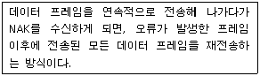
- Stop-and-Wait ARQ
- Selective-Repeat ARQ
- Go-back-N ARQ
- Sequence-Number ARQ
(정답률: 66%)
99. 데이터를 전송할 때에는 항상 정보에 대한 보안문제가 대두되며, 이를 해결하기 위해 다양한 암호화 방식이 사용된다. 다음이 설명하고 있는 암호화 방식을 사용하는 것은?
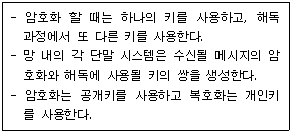
- DES
- RSA
- SEED
- IDEA
(정답률: 54%)
100. 다음 설명에 해당하는 IP 주소의 클래스로 옳은 것은?
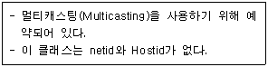
- A 클래스
- B 클래스
- C 클래스
- D 클래스
(정답률: 52%)